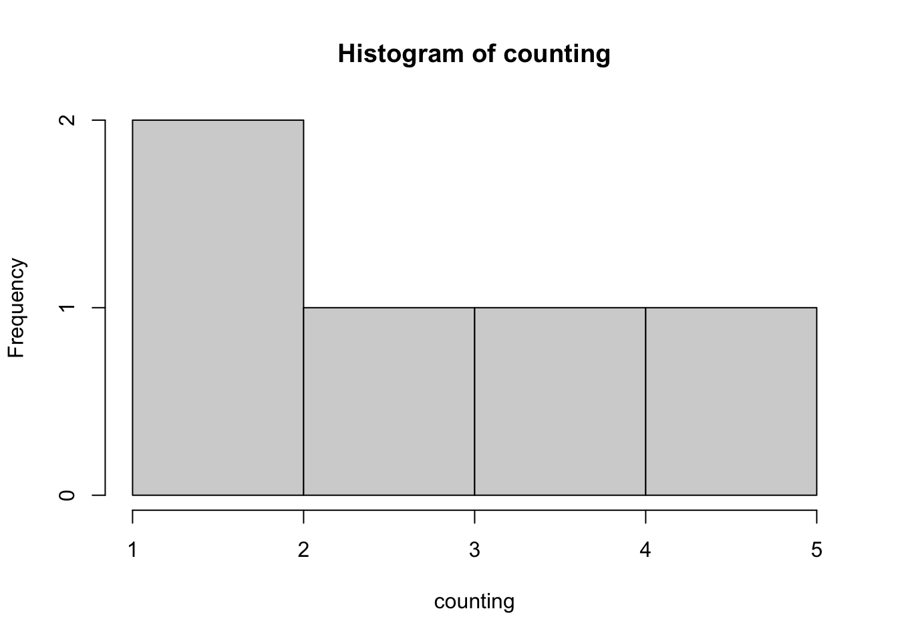
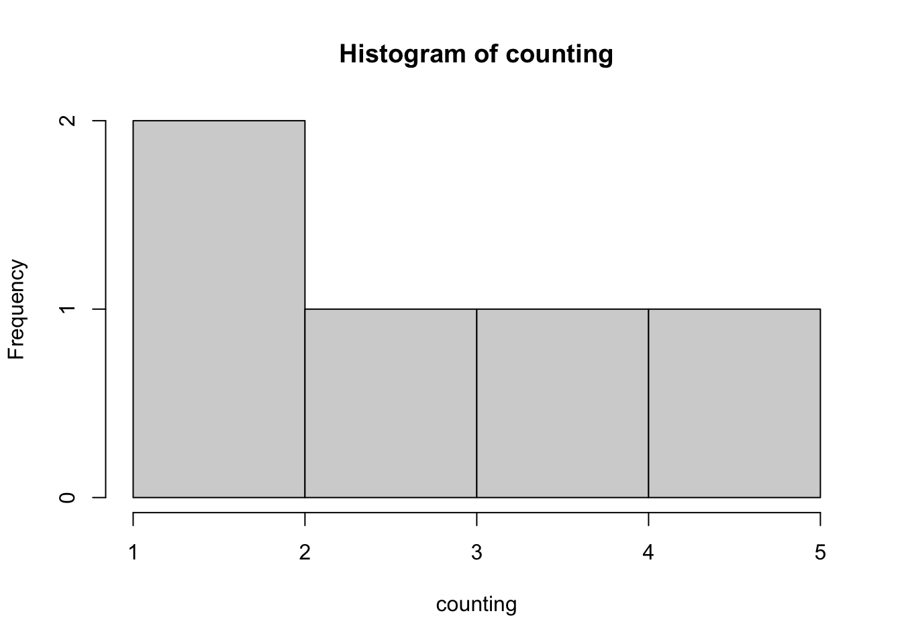
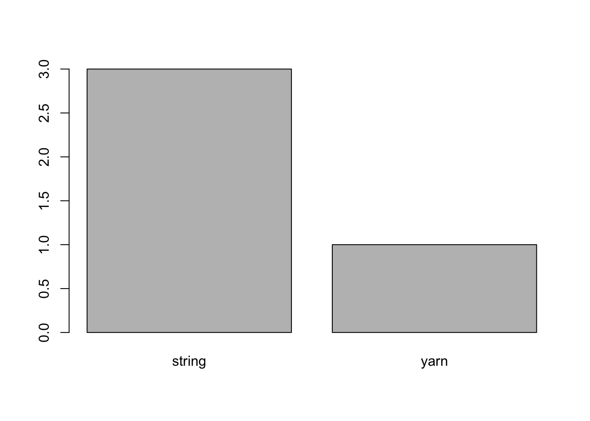
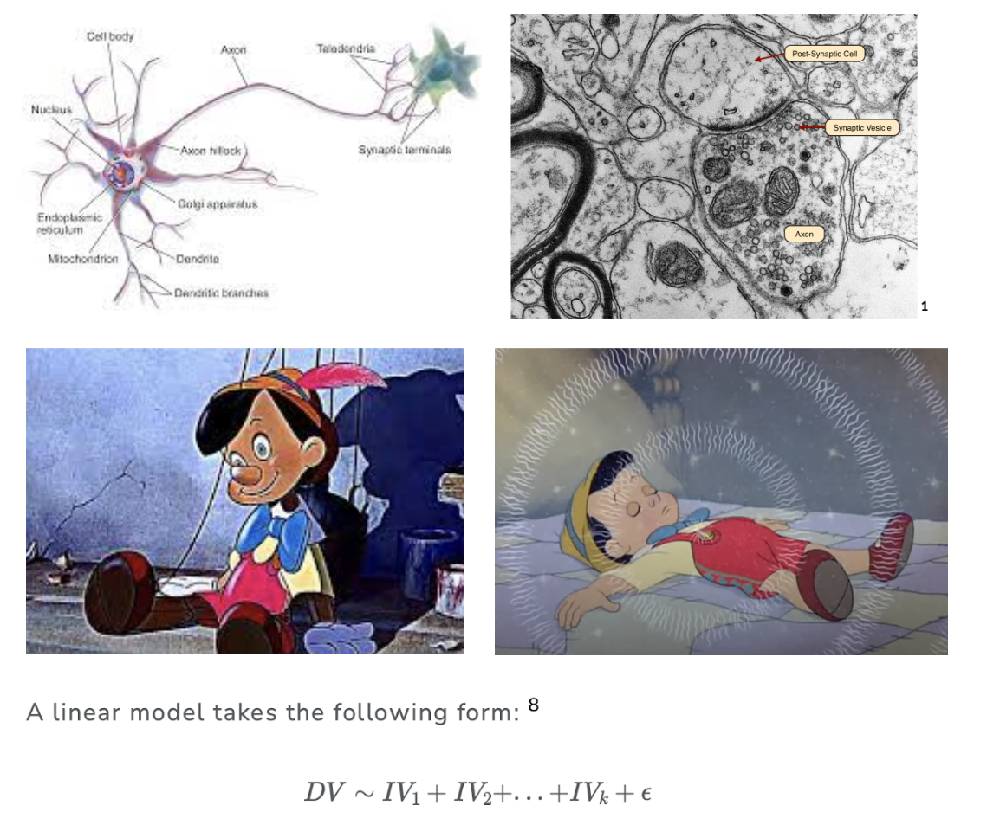
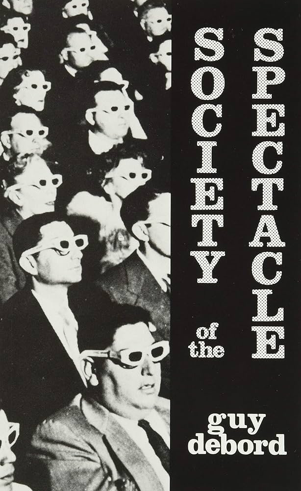
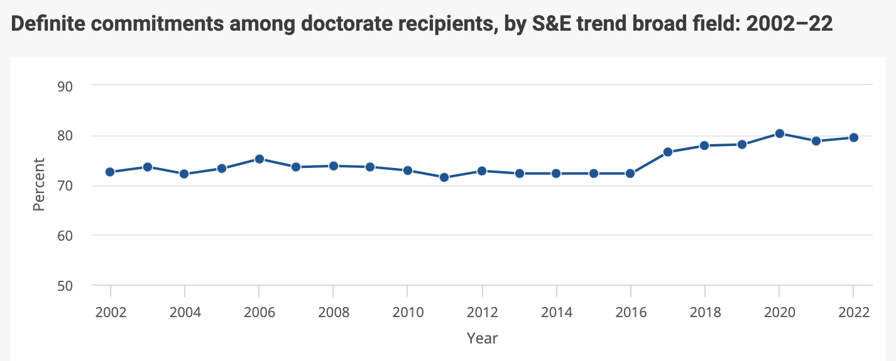
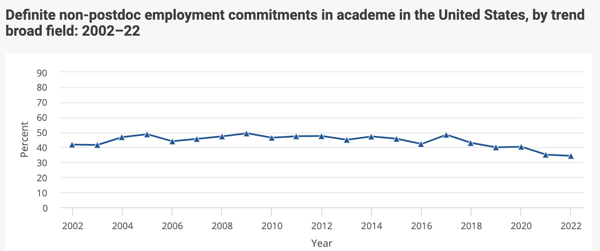

num.var <- c(6,7,6,7,6,7,6,7)
hist(num.var)
these notes on bCourses, or : catterson.github.io/calstats/calstatsSP26.html
find these notes, then click on this link to check-in


num.var <- c(6,7,6,7,6,7,6,7)
hist(num.var)

cat.var <- c("string", "string", "string", "yarn")
cat.var <- as.factor(cat.var)
plot(cat.var)
EXAMPLE : what will your bedtime be tonight?
What’s a prediction about people (or the world) that you made today? What information did you use to make this prediction? How did (or could) you use this prediction to influence outcomes? Were you valid in your predictions? Finally, write a linear model that defines the prediction (and information that you used) as a formula (e.g., DV ~ IV1 + IV2 + … + error).
Psychological scientists seek to better understand variation, in order to help make valid predictions in ways that help exert power over our environments.
Knowledge of Neurons
Knowledge of Addiction

Link to NYT article. These data are a little dated; couldn’t find more recent data on this, but in reports to investors reports consistent growth in metrics like “ad impressions” and “daily active users”.

DV ~ IV1 + IV2 + IV3 + … + ERROR
list the variable that you want to predict (the DV)
list the variables that you think will help predict the DV (the IVs)
NOTE : you do not (and can not) account for EVERY variable in your linear model!
IN FACT : researchers are very specific about the variables they will include.
ERROR will capture all the other variables not in your model.
Example : Define a linear model to predict why people differ in the amount of screen time that they use (between or within-person differences)?
the direction of the prediction : is there a positive or negative relationship between the IV and the DV?
the “weight” of the prediction : how much does each IV help us predict the DV?
what is the “best” predictor in our model?
what is the “worst” predictor in our model?
the amount of error in our prediction : how well does the model as a whole help us predict individual scores? how well does the model generalize to “reality”?

~ attendance ~ grades + error
“The revolutionary viewpoint of a movement which thinks it can dominate current history by means of scientific knowledge remains bourgeois…the utopian socialists, remaining prisoners of the mode of exposition of scientific truth, conceived this truth in terms of its pure abstract image….it is on the model of astronomy that the utopians thought they would discover and demonstrate the laws of society.” (82-83)

“If you want knowledge, you must take part in the practice of changing reality. If you want to know the taste of a pear, you must change the pear by eating it yourself. If you want to know the structure and properties of the atom, you must make physical and chemical experiments to change the state of the atom. If you want to know the theory and methods of revolution, you must take part in revolution. All genuine knowledge originates in direct experience.” - Mao


Mostly Unpaid Experiences
From the berkeley website…
“Cold calling” labs who are doing work you think is cool.
Chat with your TAs / Professors
Some paid experiences exist!
work with data : transcribing data; behavioral coding data; recruiting and participants to collect data; setting up psychophysiological recordings; cleaning data; etc.
other opportunities to gain skills you can demonstrate :
reading & discussing papers
working with IRB (institutional review board - an ethics thing)
analyzing data → presenting research at a conference (poster) or submitting a paper for publication [your golden ticket]
general mentorship (how to apply to grad school; where to apply; who to talk to & e-mail; etc.)
NOTE : this work and these skills apply to other work outside of research applications [time management; coordinating schedules; juggling responsibilities; etc.]
Course credit (hah), a letter of recommendation, ability to write about experiences that you have had (see above).
Vibes : is this [work or lab] for you?
do you enjoy the work? are you going to look forward to showing up and doing the work / fulfilling the commitment?
are you working with a horrible monster?
not responsive
inconsistent work / no plan for your work
kind of a bully (emotionally abusive → stealing your work)
or are you working with someone who is super cool and a positive influence on mentoring young minds!?!?! [YES!!!!]
You are applying to work on research with a specific professor(s) at a school.
Should have a sense of the topic you want to pursue.
Good to have a narrative about how your past work and studies have prepared you for this topic / demonstrate an enduring interest in the topic.
Independent Thesis / Research Project :
an official honors’ thesis
undergraduate research project (e.g., SURF; Psych 101!)
your own independent study / advanced work you did as an RA
Personal Statement : Experiences with Research You Can Write About
I’m fascinated by people…Over the last year, I worked on an independent research study to better understand….
Working as an RA; your research project; attending / presenting at a conference; etc.
3-4 Letters of Recommendation : folks who can speak personally to your ability to do research.
Clinical Students : some kind of clinical internship / experience 😟
Talk to people who are doing the thing you want to be doing about their journey
| PhDs get jobs? |  |
| but not in academia… |  |
| $$$$$$$$ |  |